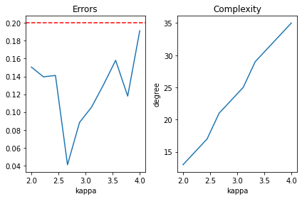

Introduction to Quantum Singular Value Transformation
Or grand unification of quantum algorithms, if you feel a bit grandiose.
quantum concepts
paper review
Published
June 7, 2023
Code
import numpy as npimport scipy.statsimport scipy.linalgimport matplotlib.pyplot as pltfrom functools importreduceimport pyqspimport pyqsp.angle_sequenceimport pyqsp.responsefrom pyqsp.angle_sequence import QuantumSignalProcessingPhasesimport contextlibimport iodef quiet(func):def quiet_func(*args, **kwargs): f = io.StringIO()with contextlib.redirect_stdout(f): res = func(*args, **kwargs)return resreturn quiet_funcplt.rcParams["figure.figsize"] = (6, 4)
1 Introduction
Quantum singular value transformation (QSVT) is a modern framework for quantum algorithms encompassing a wide range of applications from quantum search, to Hamiltonian simulation, to machine learning problems, and beyond. If you are willing to be a bit dramatic, QSVT has been claimed to provide a grand unification of quantum algorithms. In this post, I intend to give a comprehensive introduction to the subject.
I don’t think there is too much introductory material available so far, although I stress a great paper by Martyn et al. [1]. I would actually recommend it as the first read, instead. In many ways, my presentation here is similar and inspired by it. There are some distinctions, though.
I use insights from a recent paper by Tang and Kian [2], which simplify the derivation of QSVT and streamline the construction of polynomial approximations.
The explanations here are interleaved with fully functional code samples.
If nothing else, I frame some things differently, and this may click better.
I also recommend a recent blog post by Arrazola [3]. It is relatively short, very well explained, and contains code snippets in pennylane. However, it is quite limited in scope.
I will mostly focus on the concepts behind QSVT, but also implement several algorithms explicitly. A comprehensive list of the QSVT applications, as of 2019, can probably be found in [4] or [5]. I’m not sure if there is an up-to-date account.
1.1 A high-level overview
So, how does QSVT work? Constructing a quantum algorithm using QSVT consists of the following main steps. Don’t worry if this does not immediately make sense, the goal of this post is to elaborate and give examples.
QSVT in a nutshell
Express your problem of interest as applying a function \(f(x)\) to (the singular values of) a matrix \(A\to f(A)\).
Find a unitary circuit \(U\) that block encodes your matrix, i.e. in a suitable basis \[U=\begin{pmatrix}A&*\\ *&*\end{pmatrix} \ .\]
Find a good enough polynomial approximation to the target function \(p(x)\approx f(x)\).
Using quantum signal processing construct a circuit \(U_\phi\), that block encodes \(p(A)\), i.e. \[U_\phi=\begin{pmatrix}p(A)&*\\ *&*\end{pmatrix} \ .\]
Let’s begin unpacking this by clarifying the first step, i.e. how to frame your quantum problem as a singular value transformation. Here are three examples.
Grover’s search. There is some marked state \(|m\rangle\) of \(n\) qubits that we need to find. In this case, we can take \(A\) to be \(1\times 1\) matrix containing a single matrix element \(a=\langle m|H^{\otimes n}|0\rangle\). If we can apply the sign-function to it \(x\to \operatorname{sign}(x)\), we will map an arbitrary amplitude \(a>0\) to 1, and hence build the circuit that is guaranteed to take the initial state \(|0\rangle\) to the marked state \(|m\rangle\).
Quantum simulation. Here given a Hamiltonian \(H\) we seek to construct a unitary \(e^{-iHt}\). Quite literally, this is the problem of applying \(f(x)=e^{-ixt}\) to the eigenvalues of \(H\). Up to technicalities, eigenvalues can be transformed in the same way as singular values.
Solving linear equations. Given a matrix \(A\) and a vector \(b\) solve \(Ax=b\) for \(x\), i.e. compute \(A^+b\), where \(A^+\) is the Moore-Penrose pseudo-inverse of \(A\). But pseudo-inverse \(A^+\) is just equal to the usual hermitian conjugate \(A^\dagger\) with singular values inverted, so here \(f(x)\propto \frac1x\).
Many other applications of QSVT exist, but in this blog post I will focus on these three. Hopefully step (1) is starting to make sense now. How do we perform step (2) then, how to find the block encoding? To my understanding, this is typically the most challenging part, and has to be addressed case-by-case. I will give some intuition and examples of block encodings below in Sec. 4. Next, QSVT allows performing only polynomial transformations, but most problems of practical interest require applying non-polynomial functions. This is why we need step (3), which is finding the right polynomial approximation. Importantly, the degree of the approximating polynomial determines the complexity of the final quantum circuit, so this is an essential step as well. Finally, after you decided on the best approximating polynomial, you can implement it using techniques from the quantum signal processing, which is step (4). This should be straightforward in theory, while in practice there still may be issues with speed and numerical stability for large instances.
1.2 What I will and will not discuss
Here are some of the topics that will be covered.
Basic quantum signal processing.
Basic concepts behind the singular value decomposition.
Basic concepts and examples of block encodings, including the linear combination of unitaries.
Some intuition behind approximating polynomials and expected scaling.
How to construct QSVT circuits and why do they work.
Many code samples, including explicit implementations of several quantum algorithms.
Examples of how to use pyqsp [6] package for signal processing.
Here are some of the important omissions.
How to find QSP angles from a polynomial.
How exactly to construct an approximating polynomial.
How to do block encoding in general.
Only consider a limited number of examples.
I will not implement algorithms as quantum circuits, but merely as matrix multiplications. This allows to cut some corners, but is less pedagogic.
In the end, this turned out to be a behemoth-sized post. Although I tried to break it up into small digestible pieces, do not expect a light read. Also, I tried my best to be pedagogical but also precise in technical detail. I welcome feedback on the presentation and suggestions on possible errors.
Alright, with all disclaimers out of the way, we are ready to begin!
2 Quantum signal processing
The origins and applications of the quantum signal processing (QSP) are very interesting in their own right, but I won’t review them here. Instead, I will view QSP simply as a precursor to QSVT, or QSVT for two-level systems, and hence a great starting point.
2.1 Ingredients
So, suppose you have a two-level system and can perform a simple diagonal transformation on it \[\begin{align}
S(\phi)=\begin{pmatrix}e^{i\phi}&0 \\ 0& e^{-i\phi}\end{pmatrix} \ . \label{S}
\end{align}\] Here \(\phi\) is an angle you can vary. You can also perform a fixed non-diagonal operation \[\begin{align}
R(a)=\begin{pmatrix}a&\sqrt{1-a^2}\\\sqrt{1-a^2} & -a\end{pmatrix} \ . \label{R}
\end{align}\] Here, \(a\in \mathbb{R}\) is fixed. Note that \(R(a=1)\) is a reflection, hence the variable name.
2.2 Circuit
The most general quantum circuit you can build from these two ingredients is the following alternating sequence
Now, if you actually compute \(U_\phi\), you’ll find it is of the following form (up to a global phase) \[U_\phi= \begin{pmatrix} P(a) & i Q(a)\sqrt{1-a^2} \\ i Q(a)^*\sqrt{1-a^2} & P(a)^*\end{pmatrix} \ . \] The key fact here is that both \(P(a)\) and \(Q(a)\) are polynomials.
W and R signal conventions
One can choose different signal- and signal-processing operators. Our choice is the \(R\)-convention. It will be most convenient for generalizing to QSVT. Another standard one is \(W\)-convention, where the signal operator is \[W(a)=\begin{pmatrix}a & i\sqrt{1-a^2}\\i\sqrt{1-a^2} & a\end{pmatrix} \ .\] The two signal operators are related by \(R(a)=-i S(\pi/4) W(a) S(\pi/4)\). For \(W\)-signal operator relation \(\eqref{QSP}\) is exact, while for \(R(a)\) there is an additional global phase \(i^d\). If we have an angle sequence \(\phi_i^W\) implementing the desired polynomial transformation with \(W\)-signal, the angles for \(R\)-signal are \[\phi_0^R=\phi_0^W+(2d-1)\frac{\pi}{4}, \quad \phi_d^R=\phi_d^W-\frac{\pi}{4}, \quad \phi_i^R=\phi_i^W-\frac{\pi}{2} (0 < i< d)\,\, \ .\]
2.3 Polynomials from QSP
Why are \(P(a)\) and \(Q(a)\) polynomials? Well, you can check this directly/prove by induction. For instance, \[\begin{pmatrix} P(a) & i Q(a)\sqrt{1-a^2} \\ i Q(a)^*\sqrt{1-a^2} & P(a)^*\end{pmatrix} \begin{pmatrix} a & i \sqrt{1-a^2} \\ i\sqrt{1-a^2} & a\end{pmatrix}=\begin{pmatrix} P'(a) & i Q'(a)\sqrt{1-a^2} \\ i Q'(a)^*\sqrt{1-a^2} & P'(a)^*\end{pmatrix}\] with (primes are not derivatives!) \[P'(a)=aP(a)-Q(a)(1-a^2),\qquad Q'(a)=P(a)+aQ(a) \ .\]
The polynomials \(P,Q\) obtained in this way are not arbitrary. They always satisfy the following three properties.
\(\operatorname{deg}(P)\le d\), \(\operatorname{deg}(Q)\le d-1\). In words, the degree of \(P\) is no more than the number of times \(R(a)\) is applied, and degree of \(Q\) is one less.
\(P(-a)=(-1)^{d+1} P(a), Q(-a)=(-1)^{d} Q(a)\). In words, both \(P\) and \(Q\) have definite and opposite parity. For \(d\) even \(P\) is odd and \(Q\) is even, for \(d\) odd \(P\) is even and \(Q\) is odd.
\(|P(a)|+(1-a^2)|Q(a)|^2=1\). This follows from \(U_\phi\) being a unitary. In particular, this implies that \(P(a)\) is bounded \(|P(a)|\le 1\) for \(-1\le a\le 1\).
An important fact of QSP is that the reverse statement is also true - as long as a degree \(d\) polynomial \(P\) satisfies these conditions, there are \(d+1\) angles \(\phi_i\) that produce \(P\) via the QSP \(\eqref{QSP}\). While the proof is not trivial, the statement looks reasonable. Indeed, a complex polynomial \(P\) of degree \(d\) and definite parity has about \(d\) independent real coefficients, and this is exactly the number of angles we can tweak in the QSP. Since dimensions of the parameter spaces agree, it is plausible that they can map both ways.
2.4 Generalizing QSP polynomials
While many polynomials \(P\) can be obtained in this way, there are important limitations. In particular, by property (3) \(|P(1)|=1\), which is often undesirable (say, you need to approximate \(f(x)\) such that \(f(1)\neq1\)). The trick is to look at the real part \(\operatorname{Re} P(a)\). While still bounded, it does not have to satisfy \(\operatorname{Re} P(1)=1\) and is general enough for many applications. Then the problem is how to access \(\operatorname{Re}P\). One way is to measure the QSP operator in \(|\pm\rangle\) basis. Indeed, you can check that
A QSP sequence can be found so that \(\operatorname{Re}P(a)\) gives the desired polynomial, while \(\operatorname{Re}Q(a)\) is approximately zero.
Another way to single out the real part of \(P(a)\) is by introducing an auxiliary qubit and applying the following circuit
Fig. 1: Block encoding real polynomial
This trick more readily generalizes to QSVT. In effect, this circuit performs a block encoding of \(\frac12\left(U_\phi+U_{-\phi}\right)\). Since \(U_{-\phi}=U_{\phi}^*\), it block encodes \(\frac12\left(P(a)+P(a)^*\right)=\operatorname{Re}P(a)\). If the circuit above is not clear, don’t worry, I will discuss block encodings in Sec. 4. The same trick can be repeated (using one more ancilla qubit) to combine even and odd polynomials into a general one. In effect
Combining several QSP circuits, we can block encode any real polynomial \(P(x)\) satisfying \(|P(x)|\le1\) for \(x\in [-1,1]\). The number of signal operators required is proportional to \(\operatorname{deg}P(x)\).
This will be sufficient for our QSVT applications.
2.5 Implementation
Let’s now implement the QSP and see how it works in practice. First we define the \(R\)-signal and signal-processing operators. To get QSP sequences we will use pyqsp python package [6]. Since it gives anges in the \(W\)-convention, we will also need to convert them to our \(R\)-convention. Finally, we define a function that assembles the QSP circuit.
def R(a):"""Singnal operator in the R-convention.""" b = np.sqrt(1-a**2) R = np.array([ [a, b], [b, -a]])return Rdef S(phi):"""Diagonal signal-processing operator."""return np.diag([np.exp(1j*phi), np.exp(-1j*phi)])def angles_from_W_to_R(phis):"""Converts QSP angles from W-convention to R-convention."""assertlen(phis)>0, 'At least one angle must be provided.' phis =\ [phis[0]+(2*len(phis)-3)*np.pi/4] \+ [phi-np.pi/2for phi in phis[1:-1]] \+ [phis[-1]-np.pi/4]return phis def apply_QSP(R, phis):"""Computes S(phi_0) @ R @ S(phi_1) @ R ... @ S(phi_d-1) @ R @ S(phi_d). """ res = S(phis[-1])for phi in phis[:-1][::-1]: res = S(phi) @ R @ resreturn res
Now let’s take some arbitrary polynomial \(P\), determine the QSP angles \(P\to \phi\), and check that the real part of the QSP amplitude \(U_\phi[0,0]\) reproduces the chosen polynomial.
# Note that the polynomial must have definite parity and be bounded.p = np.polynomial.Polynomial([0., 0.1, 0., -0.4, 0., 0.4]) # QSP angles from polynomial coefficients.phis = pyqsp.angle_sequence.QuantumSignalProcessingPhases(p.coef, signal_operator='Wx')phis = angles_from_W_to_R(phis)# Range to scan over.x = np.linspace(-1, 1, 50)# Compute matrix elements of the QSP sequenceunitaries = [apply_QSP(R(xi), phis) for xi in x]matrix_elements = [np.real(u[0,0]) for u in unitaries]# Compareplt.plot(x, p(x));plt.plot(x, matrix_elements, '*');plt.title('Your polynomial implemented by QSP');
If you are running this as an interactive notebook, try changing the polynomial and see what happens. This exercise ends our introduction to QSP.
You may think of QSVT as a generalization of QSP, where instead of applying a polynomial transformation to a single matrix element, you apply it to the singular values of a block encoded matrix. Before explaining how exactly does that work, we should cover some technical background.
3 Singular value decomposition
3.1 What is it?
Probably it’s worth making a brief digression to discuss what are those singular values that we are going to transform. If, like me, you are more familiar with hermitian matrices and eigenvalues, think of the singular values as a generalization.
So, the key theorem known as the singular value decomposition (SVD), says that any (and I mean any: real or complex, hermitian or non-hermitian, square or rectangular) matrix \(A\) can be decomposed as follows \[A=V\Sigma W^\dagger \ .\]
If \(A\) is \(n\times m\) matrix, then \(V\) is a unitary of dimension \(n\times n\), \(W\) is a unitary of dimension \(m\times m\), and \(\Sigma\) is something like a diagonal matrix, except it has dimension \(n\times m\) and can be non-square. The ‘extra’ non-square part consists of zeros. If you remove it, \(\Sigma\) is just a diagonal matrix with positive entries \(\sigma_i\). Another way of writing SVD is using the bra-ket notation \[A=\sum_i \sigma_i|v_i\rangle \langle w_i| \ .\]
3.2 Relation to eigenvalues
For Hermitian matrices the eigenvalue decomposition is almost the same as SVD with \(V=W\). A subtlety is that by definition \(\sigma_i\ge0\) while the eigenvalues can be negative. Negative signs of the eigenvalues can be absorbed into \(V\) or \(W\), but this will make them different.
Also, you can show that non-zero eigenvalues of hermitian operators \(A^\dagger A\) and \(AA^\dagger\) are equal to \(\sigma_i^2\).
3.3 Relation to operator norm
SVD has many applications, and I’ll mention two of them that will be relevant. Define the operator norm of \(A\) by \[||A||=\sup_v \frac{|Av|}{|v|} \ . \]
In words, the linear transformation \(A\) in general changes the length of the input vector \(v\), and the operator norm quantifies the largest such change. It is easy to see that \(||A||=\max_i \sigma_i\), i.e. that operator norm is equal to the largest singular value.
Operator norm is a natural measure in quantum mechanics, and in particular in QSVT. Assume we aimed to implement some operator \(A_0\) but only managed to implement \(A\). For an arbitrary state, we can write \(A|\psi\rangle=A_0|\psi\rangle+(A-A_0)|\psi\rangle\). The error term can be bounded as \(|(A-A_0)|\psi\rangle|\le ||A-A_0||\). Hence, if \(A\) is close to \(A_0\) in the operator norm, its action on any state will have a large overlap with the target state. In quantum mechanics, this means that for all practical purposes \(A\) is a good approximation to \(A_0\).
3.4 Moore-Penrose pseudo-inverse
Another application of SVD is to linear systems of equations \(Ax=b\). Depending on \(A\) and \(b\), the system may have a single solution, many solutions or none at all. A related problem is to minimize \(|Ax-b|^2\), a problem which always has a solution. It can be written as \(x=A^+b\) with \(A^+\) being the Moore-Penrose pseudo-inverse. It is most easily defined in terms of the SVD \[\begin{align}
A^+=\sum_{\sigma_i\neq0}\sigma_i^{-1} |w_i\rangle \langle v_i| \ . \label{pseudo-inverse}
\end{align}\] For invertible matrices, \(A^+\) coincides with the usual inverse \(A^{-1}\). For non-invertible ones, this is in a sense the closest you can get. Note that \(A^+\) is equal to \(A^\dagger\) with singular values inverted.
3.5 How to define polynomial of an arbitrary matrix
It is straightforward to define a polynomial of a hermitian matrix, e.g. for \(p(x)=x-x^2+x^4\) we set \(p(H)=H-H^2+H^4\). Alternatively, we can say that the polynomial applies to eigenvalues of \(H\), i.e. if \(H=\sum_i \lambda_i |v_i\rangle\langle v_i|\) then \(p(H)=\sum_i p(\lambda_i) |v_i\rangle\langle v_i|\).
For a general matrix \(A\) expressions like \(A^2\) may not make sense, because of incompatible dimensions. More abstractly, for a generic operator \(A\) the input space need not be the same as the output space, so applying \(A\) twice is simply not defined. In principle, we could still define \(p(A)\) by applying \(p\) to the singular values of \(A\), similarly to the hermitian case. The more natural and useful definition is a bit different.
Polynomial of a general matrix
For \(A=\sum_i \sigma_i|v_i\rangle\langle w_i|\) define \[\begin{align}
p(A)=\begin{cases} \sum_i p(\sigma_i)|v_i\rangle \langle w_i|,\qquad \text{$p$ is odd}\\ \sum_i p(\sigma_i)|w_i\rangle \langle w_i|,\qquad \text{$p$ is even} \end{cases}
\end{align}\]
For example, for \(p(x)=1-x^2+x^4\) we get \(p(A)=\mathbb{1}-A^\dagger A+(A^\dagger A)^2\), for \(p(x)=x-x^3\) we get \(p(A)=A-AA^\dagger A\). The pattern should be clear. By alternating \(A\) and \(A^\dagger\) we make sure that the input space of a new operator is the output space of a preceding one. If the \(p(x)\) is odd, \(p(A)\) maps between the same space as \(A\). If \(p(x)\) is even, \(p(A)\) maps the input space of \(A\) back to itself.
We will see that this distinction between the even and odd polynomials spills over into QSVT.
4 Block encodings
Another key concept to QSVT is that of block encodings. The idea is as follows. Quantum computer can only effect unitary transformations \(U\). However, many interesting operators are not unitary (say a typical Hamiltonian, or a matrix of a linear system). However, they can often be represented as a subpart of a larger unitary operation, or block encoded.
4.1 Block encoding in the computational basis
The simplest case of the block encoding is when your matrix of interest \(A\) occupies the top-left corner of a unitary
Here and below, the wildcard asterisk \(*\) means that we don’t care what is contained in other blocks as long as \(U\) is unitary. \(A\) and \(*\) blocks can be of any size compatible with one another. \(U\) must be square, of course. That’s it, that’s block encoding.
The tricky part is to actually find an efficient quantum circuit corresponding to \(U\). In general, this is very problem-specific. I will mostly assume that block encodings are given from above (we have an oracular access to them). I will however discuss block encoding of a linear combination of unitaries in Sec. 4.5.
4.2 Can any matrix be block encoded?
The block encoded matrix \(A\) can be almost arbitrary. The only restriction is that its operator norm is less than one \(||A||\le1\) (otherwise \(U\) can not be unitary). If this is not the case, we can often encode \(A/\alpha\) with sufficiently large \(\alpha\) instead. Again, this is problem-specific.
4.3 Single-qubit block encoding
Often, the operator \(A\) to be block encoded naturally acts on some \(n\)-qubit system, perhaps \(A\) is a Hamiltonian. In that case, assuming \(||A||\le 1\), we only need one additional qubit to block-encode \(A\). The result may look something like
Show that \(U\) is unitary. You will need to show that \(A\sqrt{1-A^\dagger A}=\sqrt{1-AA^\dagger}A\) which can be done via SVD.
We can express the fact that \(U\) block encodes \(A\) by writing \(U=|0\rangle\langle0|\otimes A+\dots\).
4.4 Controlled unitary is a block encoding
For intuition, I will give two examples of how to implement block encodings. One familiar case is a controlled unitary operation. Indeed, \[C(U)=|0\rangle \langle 0| \otimes U+|1\rangle \langle 1| \otimes U=\begin{pmatrix} U & 0 \\ 0 & \mathbb{1}\end{pmatrix} \ .\] Note that this is \(|0\rangle\)-controlled unitary, the standard \(|1\rangle\)-controlled has \(U\) and the identity blocks swapped.
More generally, let \(U\) be controlled by a computational \(n\)-qubit state \(|m\rangle\), i.e. \(C_{|m\rangle\langle m|}U=|m\rangle\langle m| \otimes U+(\mathbb{1}-|m\rangle\langle m|)\otimes\mathbb{1}\). Then, in matrix form
Linear combination of unitaries (LCU) is a powerful technique for block encoding. Using controlled versions of unitary operators \(U_1,\dots, U_N\) it block encodes their linear combination \(\alpha_1 U_1+\dots\alpha_N U_N\)
It works as follows. Assume \(N=2^n\) and you can implement unitaries \(U_m\) controlled by a state of \(n\) qubits, \(C_{|m\rangle\langle m|}U_m\). Taking the product of all these controlled unitaries we get what is known as the \(\text{SELECT}\) operator
In other words, \(\text{SELECT} = \sum_m |m\rangle\langle m| \otimes U_m\), and it applies (selects) a different unitary based on the value of the control state. Now also assume you have a \(\text{PREPARE}\) operator acting on the control qubits as follows \(\text{PREPARE} |0\rangle=\sum_m \sqrt{\alpha_m} |m\rangle\) (assuming \(\sum_i\alpha_i=1\)). Then
i.e. it block encodes the desired linear combination.
Exercise
Prove this statement. Show also that Fig. 1 is a particular case, and that it indeed block encodes \(\frac12\left(U_{\phi}+U_{-\phi}\right)\) as claimed.
Note that we need logarithmically less ancilla qubits than the number of unitaries, so the computations above are efficient. One of the use cases for this protocol is to block encode a local Hamiltonian, i.e. a Hamiltonian that consists of not too many Pauli strings of bounded weight. Implementing the controlled version of each Pauli string is straightforward, and the procedure goes through.
4.6 Applying block encoded operator to a state
We can apply a block-encoded operator \(A\) to a quantum state \(|\psi\rangle\) as follows. Assume \(U=|0\rangle\langle0|\otimes A+\dots\) block-encodes \(A\) and we prepared the \(n+1\) qubit system in the state \(|\Psi\rangle=|0\rangle \otimes|\psi\rangle\). Then
Therefore, if we measure the ancillary qubit after applying \(U\) to \(|\Psi\rangle\) and find it in state \(|0\rangle\), the state of the remaining qubits is \[\frac{A|\psi\rangle}{\langle\psi|A^\dagger A|\psi\rangle} \ .\] I.e., up to a normalization, it is the state \(A|\psi\rangle\) we aimed to find. On the other hand, if we find the ancialla qubit in state \(|1\rangle\) we don’t get a useful result. Indeed, a general non-hermitian operator can not be implemented on a quantum computer deterministically, we need to post-select on the state of the ancillary qubit. The success probability \(P\) of this protocol is given by \(P=\langle\psi|A^\dagger A|\psi\rangle\).
4.7 Block encoding in general bases and projection operators
In general, we do not need the block encoding to be in the computational basis, i.e. that \(A\) be the top-left block of a unitary \(U\). We can assume this holds only in some specially chosen input and output bases
Here, \(B_L\) and \(B_R\) are unitary matrices that perform the necessary bases change.
This statement is a bit empty because there is too much freedom: using properly chosen \(B_R\) and \(B_L\) we can say that any \(U\) is a block encoding of any \(A\). What we really need in QSVT is the ability to perform controlled projectors based on the block encoding bases. Here is what I mean. Define \[\Pi_n = \begin{pmatrix} \mathbb{1}_{n\times n} & 0 \\ 0 & 0\end{pmatrix} \ .\] This is a projector on the first \(n\) computation basis vectors. Now define left and right projectors \[\Pi_L = B_L P_n B_L^\dagger, \qquad \Pi_R = B_R P_m B_R^\dagger \ .\] If \(A\) is square \(n=m\), but for general block encodings this need not hold. The key property of the projectors is
\[\Pi_L U \Pi_R= B_L\begin{pmatrix} A & 0 \\ 0 & 0\end{pmatrix} B_R^\dagger \ .\]
QSVT does not explicitly use \(B_L\) or \(B_R\). We only need to have access to operators \[\Pi_L(\phi)=e^{(2\Pi_L-1)\phi},\quad \Pi_R(\phi)=e^{(2\Pi_R-1)\phi} \ .\] These are analogs of the signal-processing operator \(S(\phi)\) we defined in QSP \(\eqref{S}\). Note that \[\Pi_L(\phi)=B_L\begin{pmatrix}e^{i\phi} &0 \\ 0 & e^{-i\phi}\end{pmatrix}B_L^\dagger \] (and similarly for \(\Pi_R(\phi)\)). So, in the right-basis, \(\Pi(\phi)\) is indeed a block version of the QSP signal-processing operator.
4.8 Projector rotations from controlled projectors
Projector rotations \(\Pi(\phi)\) are easy to implement provided access to the projector-controlled NOT operation \(C_{\Pi}NOT\), which is defined as \[C_{\Pi}NOT=X\otimes\Pi+\mathbb{1}\otimes (1-\Pi)\] or, graphically,
Slashed line means the operator can act on an arbitrary number of qubits. The rotation \(\Pi(\phi)\) can be implemented as follows
Thus, with an additional ancilla qubit and the ability to perform \(C_\Pi NOT\) we get to implement \(\Pi(\phi)\). In what follows, I will not worry about this implementation detail and assume direct access to \(\Pi(\phi)\).
5 Approximating functions with polynomials
Another key step in QSVT is approximating target functions with polynomials. This is a huge field on its own, and I can only scratch the surface. It may be tempting to view the polynomial approximation as a technical detail worth ignoring, but we probably shouldn’t. This is because the degree of the polynomial that gives a good enough approximation to your function determines the number of queries to the block encoded operators. Hence, it directly controls the complexity of the resulting quantum algorithm. Let’s therefore try to gain some intuition about how polynomial approximations work and how they scale.
5.1 Recap of the problem
Our original intention was to apply some function \(f(x)\) to the singular values. However, in QSP/QSVT we only know how to apply polynomials \(p(x)\), so we will need a polynomial that approximates the target function well. There are also restrictions on polynomials that we can implement.
The polynomial must be bounded: \(|p(x)|\le1\) for \(-1\le x \le 1\).
We can only implement directly even or odd \(p(x)\). If the target function \(f(x)\) is of indefinite parity, we approximate its even and odd parts separately, then combine.
In a typical application we only need to approximate \(f(x)\) on a subset \([a,b]\subset [-1, 1]\). So the approximation task is to find \(p(x)\) such that
\(|p(x)-f(x)|\le \epsilon\) for \(x\in (a,b)\).
\(|p(x)|\le 1\) for \(x\in(-1,1)\).
\(p(x)\) has the smallest degree possible.
Here is an illustration of what that should look like.
Approximation
Note that \(|f(x)|\) need not be bounded by 1 on \([-1,1]\), but only on \([a,b]\), where we wish to approximate it. Similarly, \(|p(x)|\) only needs to be bounded by 1 in \([-1,1]\). In fact, because \(p(x)\) is a polynomial, it will necessarily blow up for sufficiently large \(x\).
5.2 Chebyshev polynomials
One of the most popular polynomial bases for approximations are given by Chebyshev polynomials, which can be defined as
Alright, this does not look very intuitive, what is so special about them? Actually, I don’t know. Let’s maybe ask a simpler question first, why not use the good old Taylor expansion? This is probably the first thing that comes to mind when talking about a polynomial approximation. The problem is, the Taylor series is designed to capture the behavior of a function near a particular point, and the quality of approximation degrades quickly as we step outside the close vicinity. Even if the Taylor series converges there, the convergence may be way too slow.
To capture the behavior over a certain range of values some other functional basis may be better. Probably a Fourier expansion will work well, except it is not polynomial. Now, let’s actually take a look at the Chebyshev polynomials.
Code
plt.subplot(1, 2, 1)x = np.linspace(-1, 1, 100)for n inrange(5): plt.plot(x, plt.np.polynomial.Chebyshev.basis(n)(x), label=f'$T_n$={n}')plt.title('Chebyshev polynomials in [-1, 1])')plt.legend();plt.subplot(1, 2, 2)x = np.linspace(-2, 2, 100)for n inrange(5): plt.plot(x, plt.np.polynomial.Chebyshev.basis(n)(x), label=f'$T_n$={n}')plt.title('Chebyshev polynomials in [-2, 2]')plt.legend();plt.tight_layout()
Is it just me, or the Chebyshev polynomials on \([-1,1]\) (left fig) actually look quite a lot like trigonometric functions? Note that they are also bounded there, and that they quickly blow up outside \([-1, 1]\) (right fig). For further intuition about the Chebyshev polynomials, you may wish to check out tis blog post by Jason Sachs [7].
Warning
The Chebyshev polynomials are most interesting for \(x\in [-1,1]\), but in QSP/QSVT applications we will linearly map this domain to \([a,b]\subset[-1,1]\), and so we will in fact be interested in how the Chebyshev polynomials behave outside \([-1,1]\) as well.
5.3 Chebyshev series and Bernstein ellipse
Now, as a respectable functional basis the Chebyshev polynomials have the property that an arbitrary reasonable function \(f(x)\) can be expanded into the Chebyshev series \[f(x)=\sum_{n\ge0} a_nT_n(x), \qquad x\in [-1, 1] \ .\] Coefficients \(a_n\) decay and can bound as follows [2]
Parameters \(M\) and \(\rho\) need to be explained. Define the Bernstein ellipse\(E_{\rho}\) as the subset of the complex plane inside the ellipse \(\frac{z+z^{-1}}{2}, |z|=\rho\), or alternatively \(\frac{\rho e^{i\phi}+\rho^{-1} e^{-i\phi}}{2},\phi\in (0,2\pi)\). Without loss of generality, we assume \(\rho\ge1\). The interval \([-1,1]\) is contained in \(E_\rho\). Here is a sketch.
Now, assume that \(f(x)\) can be analytically continued from \([-1,1]\) to the interior of \(E_\rho\). Then, we denote by \(M\) an upper bound on the value of \(f(z)\), i.e. \(|f(z)|\le M, z\in E_\rho\).
In a typical application, we have a family of functions \(f_\lambda(x)\) and want to look at the asymptotic of \(\lambda\to 0\). As \(\lambda\) decreases, \(M\) tends to increase. To counteract this and keep \(M\) constant, we will need to shrink the Bernstein ellipse.
Alright, so for any fixed \(M\) and \(\rho\) the Chebyshev coefficients of \(f(x)\) decay exponentially \(\eqref{an}\). Given this fact and that all Chebyshev polynomials are bounded by 1 on \(x\in [-1,1]\) we find that the truncated Chebyshev series satisfies \[|f(x)-\sum_{m=0}^n a_m T_m(x)|_{[-1,1]}\le \frac{2M\rho^{-n-1}}{\rho-1} \ . \]
However, this approximation result is in general not sufficient for QSVT applications. The interval \([-1,1]\) here should be linearly mapped to a subset \([a,b]\) from the previous section, i.e. the subset where the target function needs to be approximated. This means that along with finding a good approximation on \([-1,1]\) we also need to ensure that the resulting polynomial remains bounded in some region outside \([-1,1]\), which is an additional challenge.
5.4 Bounded Chebyshev approximations
A general approach to this problem is proposed in [2]. The idea is to take an approximation that behaves well on \([-1,1]\) but blows up outside, and multiply it by a function that is close to 1 at \([-1, 1]\) and rapidly decays outside. Then the product can be re-expanded in the Chebyshev basis and yields the desired result. Here is what we get (Theorem 19 of [2]).
Bounded approximation by Chebyshev polynomials
Let \(f(x)\) be analytic on \([-1, 1]\) and analytically continuanable to \(E_\rho\) where it is bounded by \(M\). Denote \(\rho=1+\alpha, \alpha>0\). For any \(\epsilon\) there is a polynomial \(p(x)\) such that
In words, \(p(x)\) approximates \(f(x)\) to relative precision \(\epsilon\) on \([-1,1]\). Furthermore, \(p(x)\) is bounded by a constant in some \(\delta\)-neighborhood outside \([-1, 1]\). Finally, \(p(x)\) is \(\epsilon\)-close to zero outside this \(\delta\)-neighborhood and up to a larger \(b\)-neighborhood. Here is a sketch.
The condition that \(p(x)\) is zero ouside some \(\delta\)-neighborhood is useful for approximating piece-wise smooth functions. Now, I didn’t yet tell what are \(\delta\) and \(b\) and, most importantly, what is the degree of the polynomial? According to [2], \(\delta\) can be anywhere in \((0, \frac{min(1,\alpha^2)}{C})\) for a sufficiently large but constant \(C\). And you get to choose \(b>1+\delta\) freely. Then, the desired polynomial has degree \[\begin{align}
\operatorname{deg}p(x)=O\left(\frac{b}{\delta}\log \frac{b}{\delta \epsilon}\right) \label{pdeg} \ .
\end{align}\]
Some important features of this result.
If you insist on a good approximation at the point of discontinuity, you pay a linear price. I.e. the degree of the polynomial scales linearly (modulo the log factor) with \(\delta^{-1}\).
If you want your polynomial approximation to be bounded far enough away from \([-1,1]\) you pay a linear price, i.e. the degree scales linearly (modulo the log factor) with \(b\).
Neatly, dependence on the error \(\epsilon\) is only logarithmic.
5.5 Illustration: approximating the sign function
In many applications of QSVT it is actually very helpful to approximate the sign function \(\operatorname{sign}(x)\). This will also help us illustrate the approximation results described above.
Note that \(\operatorname{sign}(x)=\theta(x)-\theta(-x)\), where \(\theta(x)\) is the step function. We can approximate each \(\theta(\pm x)\) separately, then combine. We will require that our approximation is \(\epsilon\)-close to \(\operatorname{sign}(x)\) outside a small region \((-a,a)\) around the discontinuity.
Take for concreteness \(\theta(x)\). For \(x>0\) it is smooth and in fact constant, so \(M=1\) for arbitrary \(\rho\). The only thing we need to take care of is that the discontinuity region, where our approximation fails, is small enough \(\delta\le a\). This implies that there is a polynomial of degree \(O(\frac1a\log\frac1{a\epsilon})\) that does the job.
In this and some other cases, the approximation bound stated in the previous section does not give the tightest result. For instance, approximating the sign function is possible with a polynomial of degree \(O(\frac1a\log\frac1\epsilon)\), i.e. the additional \(\log\frac1{a}\) factor is not necessary. However, the overhead we get from applying the procedure above is often modest, a may be a good price to pay for the universality of the approach.
6 QSVT
Phew! That was quite a bit of preparing. However, we now have all the ingredients in place to explain how (and also a bit why) QSVT works.
6.1 Recap
Let’s recap the setup.
The goal is to perform a functional transformation on the singular values of some operator \(A\to f(A)\).
We are provided with a unitary \(U\) that block encodes \(A\), i.e. \(U=B_L\begin{pmatrix} A&*\\ *&*\end{pmatrix}B_R^\dagger\).
We are provided with projectors \(\Pi_L,\Pi_R\) that describe this block encoding, i.e. \(\Pi_L U \Pi_R=B_L\begin{pmatrix} A&0\\0&0\end{pmatrix}B_R^\dagger\) and can perform projector rotations \(\Pi_L(\phi), \Pi_R(\phi)\).
We figured out what is a good polynomial approximation to our target function \(p(x)\approx f(x)\).
From these ingredients, the QSVT builds a unitary \(U_\phi\) that block encodes the desired polynomial transformation.
6.2 How QSVT works
Alright, how to build \(U_\phi\)? A bit awkwardly, we will have to separately describe two cases, when \(p(x)\) is even and when it is odd. So, for \(p(x)\) even (the number of QSP phases is odd)
Recall that we defined the polynomial of a matrix \(p(A)\) in Sec. 3.5, and that it also had a personality split into even/odd cases. The angles \(\phi\) are the same angles that we would use to apply \(p(x)\) in QSP with \(R\)-convention. Overall, this is pretty similar to how QSP circuits work.
Note
One thing I tripped over. In QSP, we have different signal conventions and need to use a different angle sequence for each. Now I just told you that for QSVT we need to borrow QSP angles in the \(R\)-convention. Don’t we need to specify how exactly is our operator \(A\) block encoded in \(U\) then? No, we need not. The difference between QSP and QSVT is that in QSP we apply the same signal operator throughout, while in QSVT we alternate between \(U\) and \(U^\dagger\). Because different block encodings are related by unitary transformations, these differences cancel in the QSVT sequence. To see why the R-convention of QSP most naturally maps to QSVT, take a look at section Sec. 6.5.
6.3 QSVT circuit
Let’s take a moment to visualize the QSVT as a quantum circuit. In the simplest case, which often holds in practice, \(B_L=B_R=\mathbb{1}\) and \(\Pi=\Pi_R=\Pi_L=|0\rangle^{\otimes k}\langle0|^{\otimes k}\), i.e. \(\Pi\) projects onto the all-zero state of \(k\) ancillariy qubits. Then, \(C_\Pi NOT\) is just the Toffoli gate controlled by these \(k\) qubits. Recall that a projector rotation \(\Pi(\phi)\) can be assembled from two \(C_\Pi NOT\) gates, as described in Sec. 4.8.
In this case, the whole QSVT circuit looks something like (image borrowed from András Gilyén’s thesis)
For more general block encodings, the picture is a bit different, yet quite similar.
Let’s implement the QSVT circuit in code for later use.
def projector_rotation(P, phi):"""Computes exponential of a projector using relation e^{i (2P-1) x}= cos(x)+i(2P-1)sin(x)""" N =len(P)return np.eye(N)*np.cos(phi)+1j*(2*P-np.eye(N))*np.sin(phi)def apply_QSVT(U, PL, PR, phis): phi_last = phis[-1]iflen(phis) %2==1: # Even polynomial phis_paired = phis[:-1] phi_0 =Noneelse: # Odd polynomial phis_paired = phis[1:-1] phi_0 = phis[0] res = projector_rotation(PR, phi_last)for phi_R, phi_L in np.array(phis_paired).reshape(-1, 2)[::-1]: res = projector_rotation(PR, phi_R) @ U.conj().T @ projector_rotation(PL, phi_L) @ U @ resif phi_0 isnotNone: res = projector_rotation(PL, phi_0) @ U @ resreturn res
6.4 Controlled version of QSVT circuit
Recall that to obtain general polynomials with QSP we need to perform a trick discussed in Sec. 2.4. It requires controlled versions of the full QSVT unitary \(C(U_\phi)\). Since constructing a controlled version is difficult in general, you might worry that implementing \(C(U_\phi)\) is costly and can alter the scaling of the algorithm. Turns out, constructing controlled version of QSVT circuits is pretty simple. Indeed, I claim that, in the even case \(\eqref{QSVT even}\)
\[
C(U_\phi)=\left(\prod_{i=0}^{d/2-1}C(\Pi_R(\phi_{2i}))U^\dagger C(\Pi_L(\phi_{2i+1}))U \right) C(\Pi_R(\phi_d)) \ ,
\] i.e. it suffices to only control the projector rotations. Why? Right, if the control qubit is not activated, projectors drop out and all pairs of \(U^\dagger, U\) combine and cancel. Otherwise, we get the QSVT circuit back.
In the odd case, the situation is similar, except for a single unmatched application of \(U\). So we will simply need to control the projectors and a single signal unitary \(U\).
For completeness, the following circuit shows how to build a controlled version of a projector rotation.
Exercise
Convince yourself the claims we’ve made are valid. Check that the above circuit is indeed a controlled projector.
6.5 Why QSVT works
Alright, how do we prove \(\eqref{QSVT even}\) and \(\eqref{QSVT odd}\)? I’d say that the full proof is a bit tedious and not very illuminating, and the main difficulty to deal with is non-squaredness of \(A\). If we assume \(A\) is square, we can sketch the proof quite simply.
I will follow a recent exposition in [2] that simplifies the derivation. The key idea there is to leverage another special matrix decomposition, known as the CS decomposition (cosine-sine). It states that for any unitary matrix \(U\) consisting of four blocks, the following decomposition exists \[U=\begin{pmatrix}A_{00} & A_{01} \\ A_{10} & A_{11}\end{pmatrix}=\begin{pmatrix}V_0 & 0 \\ 0 & V_1\end{pmatrix}\begin{pmatrix}C & S \\ S & -C\end{pmatrix}\begin{pmatrix}W_0 & 0 \\ 0 & W_1\end{pmatrix}^\dagger \ .\]
Here \(V_{0}, V_{1}, W_{0},W_{1}\) are unitaries of appropriate sizes. If all blocks in \(U\) are of equal size, matrices \(C\) and \(S\) are diagonal and satisfy \(C^2+S^2=\mathbb{1}\), hence the name cosine-sine decomposition. For blocks of arbitrary sizes, there will still be CS-subblocks, but you’d also have to carefully pad them with zeros and ones. I will not consider this case here.
An important property of the CS-decomposition, which is not shared e.g. by the SVD, is that the unitaries sandwiching the CS-core are block-diagonal. For this reason, they commute through projector-rotations and effectively drop out of the QSVT sequence. At the same time, the middle matrix in CS-decomposition looks exactly like the \(R\)-signal matrix in QSP, which explains why we need to use QSP angles in the \(R\)-convention to build QSVT circuits.
With these ideas in place, the rest is mostly filling in the details. I will not do this here, but you are welcome to try and work out the full derivation or look it up in [2].
6.6 Qubitization
QSVT is closely related to the concept of qubitization, which I believe was introduced a bit earlier in the context of the Hamiltonian simulation. The idea was again to adopt QSP to high-dimensional systems. If you go through the derivations in the previous section, you’ll find that nothing else is required other than dealing with \(2\times2\) block matrices. So effectively, the problem was indeed reduced to a QSP of a two-level system. In jargon, we qubitized the problem. [1] explains qubitization a bit differently and in a way that may help to establish a more conceptual connection between relate QSP and QSVT. You are welcome to take a look.
Alright, we are now ready to tackle some of the QSVT applications.
7 Grover’s search
As is standard, I will open the list of QSVT applications with Grover’s search. I must note though, that I find it a bit harder conceptually than many other applications. This is because we will deal with a block encoding in an a priori unknown basis, which is unusual. Anyway, let’s get going.
7.1 The problem
We aim to find an unknown computational basis state \(|m\rangle\) of \(n\) qubits. As our signal unitary, we choose the Hadamard gate acting on all qubits \(U=H^{\otimes n}\). We know that \(\langle m|H^{\otimes n}|0\rangle=\frac{1}{\sqrt{N}}\). In other words,
i.e. in a suitable basis, \(U\) block encodes the transition amplitude between \(|0\rangle\) and \(|m\rangle\). If we could apply a polynomial transformation, which approximates \(\theta(x-a)\) with \(a<\frac{1}{\sqrt{N}}\), we would effectively amplify the transition amplitude and construct a unitary \(U_\phi\) that is almost guaranteed to prepare our marked state \(|m\rangle\) starting with \(|0\rangle\).
A difficulty is that we do not really know the basis of the block encoding, as this would be equivalent to knowing \(|m\rangle\). At the same time, in QSVT we only need to access controlled versions of projectors corresponding to the block encoding, and this is exactly what Grover’s oracle does.
7.2 Projectors
Grover’s oracle can be defined as \(G=\mathbb{1}-2|m\rangle\langle m|\). Actually, in practical applications Grover’s oracle is more often represented as an operator that flips the state of an auxilary qubit controlled by the state of the system, i.e. \(G|n\rangle|0\rangle=|n\rangle|0\rangle\) for \(n\neq m\) and \(G|m\rangle|0\rangle=|m\rangle|1\rangle\). In effect, this operator is nothing but the \(|m\rangle\)-controlled NOT gate \(G=C_{|m\rangle\langle m|}NOT\). As we discussed in Sec. 4.8 it is sufficient to construct the projector rotation \(\Pi_R(\phi)\). The left projector is simply \(\Pi_L=|0\rangle\langle0|\) and its controlled version is just the \(n+1\) qubit Toffoli gate.
7.3 Polynomial approximation
So we aim to approximate \(\theta(x-a)\) for \(a\le \frac1{\sqrt{N}}\). Equivalently, we can approximate \(\operatorname{sign}(x)\) with resolution \(\delta^{-1}=a\) around the point of discontinuity \(x=0\). As discussed in Sec. 5.5, this can be done using a polynomial of degree \(O(\frac{1}{a}\log\frac{1}{a\epsilon})=O(\sqrt{N}\log\frac{\sqrt{N}}{\epsilon})\). We know that Grover’s search can run in time \(\sqrt{N}\) so the extra \(\log\sqrt{N}\), while not crucial, is unnecessary. Anyway, in the framework of QSVT finding a better scaling algorithm amounts to ‘just’ constructing a more efficient polynomial approximation. We won’t go there.
Actually, I will not construct the polynomial approximations at all in subsequent implementations. Instead, I will use routines provided by pyqsp that besides building a QSP sequence from a polynomial also includes the approximation utils.
7.4 Implementation
First, let’s define and look at the approximating polynomials. To build them, we will use a function provided by pyqsp package, which approximates \(erf(-\Delta x)\). Apparently, we can not simply specify the desired precision here, but instead have to give the degree of the polynomial and \(\Delta\). I will go with the simplest options \(\operatorname{deg}p=\sqrt{N}, \Delta=\sqrt{N}\) which give a decent, but not ideal performance.
def sign_approximating_polynomial(num_qubits):"""Polynomial that approximates the step function theta(x) for x>= 1/N**0.5""" N =2**num_qubits target_function = pyqsp.poly.PolySign()# For the Sign `pyqsp` does not determined the degree of the polynomial.# We have to input it. I will take the closest odd number to N**0.5 degree = np.ceil(N**0.5)if degree %2==0: degree +=1# This delta controls the width of our approximation around zero, but does not exacly# correspond to delta defined in the text, rather Delta here ~ 1 / our delta. Delta = N**0.5# Find the polynomial approximation. p = quiet(target_function.generate)(degree, delta=Delta)return px = np.linspace(-1, 1, 100)plt.plot(x, np.sign(x), label='sign(x)')for num_qubits inrange(1, 11, 2): p = sign_approximating_polynomial(num_qubits) plt.plot(x, p(x), label=f'qubits = {num_qubits}, deg={p.degree()}')plt.grid()plt.legend();plt.title('Polynomial approximation to sign(x)');
We see that indeed, as we increase the degree of the polynomial, the approximation around \(x=0\) improves. Now we are ready to perform the full Grover search by QSVT.
np.random.seed(42)def projector_from_state(state):"""Builds |n><n| from |n>."""return np.outer(state, state.conj())qubits =range(1, 11)amplitudes = []for num_qubits in qubits: N =2**num_qubits# Define initial state |0> and the associated projector. all_zero_state = np.zeros(N) all_zero_state[0] =1 PR = projector_from_state(all_zero_state)# Define a random marked state |m>. It will only be accessed via the corresponding projector. marked_state = np.zeros(N) marked_state[np.random.randint(0, N)] =1 PL = projector_from_state(marked_state)# Signal operator is the n-th tensor power of the Hadamard gate. H = np.array([[1, 1], [1, -1]])/np.sqrt(2) U =reduce(np.kron, [H]*num_qubits)# We will approximate the step function. p = sign_approximating_polynomial(num_qubits)# Determine QSP angles phis = pyqsp.angle_sequence.QuantumSignalProcessingPhases(p.coef, signal_operator='Wx') phis = angles_from_W_to_R(phis)# Construct the QSVT sequence U_phi = apply_QSVT(U, PL, PR, phis)# Determine the overlap with the marked state.# Recall that takind the real part corresponds to combining two QSVT sequence and is not exactly trivial# at the level of circuits. amplitude = np.real(marked_state @ U_phi @ all_zero_state) amplitudes.append(amplitude)
Alright, here is the result.
original_amplitudes =2**(-0.5*np.array(qubits))polynomial_values = [sign_approximating_polynomial(n)(a) for n, a inzip(qubits, original_amplitudes)]plt.plot(qubits, amplitudes, label='amplified amplitudes')plt.plot(qubits, polynomial_values, '*', label='values of approximating polynomial')plt.plot(qubits, [2**(-0.5*q) for q in qubits], label='original amplitudes')plt.xlabel('num qubits')plt.grid();plt.legend();
We see that our algorithm indeed significantly amplifies the original amplitudes with only \(\sqrt{N}\) calls to the oracle, albeit not perfectly. Ideally, the amplified amplitudes stay constant as \(N\) increases, while ours decay. However, this is entirely due to our choice of the polynomial approximation, which is demonstrated by plotting the values of the approximating polynomial. So our QSVT circuit works just as expected, but our approximating polynomials could be improved. I will not attempt to do it here.
8 Hamiltonian simulation
Hamiltonian simulation lands itself very naturally to the QSVT framework, although there are some technical details to watch out for. Let’s begin.
8.1 The problem
The task is, given a Hamiltonian \(H\), build a unitary \(e^{-iHt}\). That’s it. So we need just need to figure out how to apply \(f(x)=e^{-ixt}\) with QSVT.
8.2 Watch out for your Hamiltonian
Except that there may be subtleties. First, if \(||H||>1\) we could only block encode \(H/\alpha\) with large enough \(\alpha\). But that’s fine, because simulating \(H\) for time \(t\) is the same as simulating \(H/\alpha\) for time \(\alpha t\). Next, if \(H\) has negative eigenvalues, these do not coincide with the singular values. One way to deal with that is to shift \(H\) by a constant \(H+\alpha\), which can be achieved using the linear combination of unitaries. I will proceed assuming that \(||H||\le 1\) and \(H\ge0\).
8.3 Solving the parity problem
Exponential \(e^{-ixt}\) is not of definite parity, so we will need to construct it even and odd parts separately, and then combine into a linear combination of unitaries using the following circuit.
Exercise
Try to guess which \(H\) is the Hadamard gate and which is the Hamiltonian.
In fact, this circuit will block encode \(\frac12 e^{-iHt}\). Since for any \(|\psi\rangle\) we have \(|\frac12 e^{-iHt}|\psi\rangle|^2=\frac14\) the algorithm will succeed with a constant probability \(\frac14\).
8.4 Approximating polynomial
So now the task is to approximate \(\cos xt\) and \(\sin x t\) on \([0, 1]\) to some precision \(\epsilon\). How should the result scale with \(t, \epsilon\)?
Let’s try to apply the procedure from Sec. 5.4. Since this procedure does not require a definite parity, we can understand the scaling by looking directly at \(f(x)=e^{-ixt}\).
First we need to linearly map the region where we want the approximation \([0,1]\) to the standard domain of Chebyshev polynomials \([-1,1]\). We do this via \(y=2x-1 \to x=\frac{y+1}{2}\). Then we look at \(f(x(y))=e^{-i\frac{y+1}{2}t}\). In the Bernstein ellipse \(E_\rho\) this function has the maximum absolute value \(e^{\frac\alpha2 t}\), achieved when \(y\) has the largest imaginary part \(\operatorname{im} y=\frac{\rho-\rho^{-1}}{2}\approx \alpha\) assuming \(\rho=1+\alpha, \alpha\ll1\). Therefore, by taking \(\alpha=\frac{1}{t}\) we keep the target bounded by a constant in \(E_\rho\) as we increase \(t\).
According to Sec. 5.4, the smallest \(\delta\) we can choose is \(\delta=\alpha^2=\frac{1}{t^2}\), which leads to the approximating polynomial of degree \(O(t^2\log t^2/\epsilon)\). While not terrible, this is quite suboptimal. Even on physical grounds, we expect that the complexity of the simulation problem should scale lineraly with \(t\), not quadratically. A better approximation can be obtained by direct truncation of the Chebyshev series for \(e^{-ixt}\) and gives a polynomial approximation with degree scaling as \(O(t+\frac{\log \epsilon^{-1}}{\log(e+t^{-1}\log\epsilon^{-1})})\). I agree, this equation looks weird, but for fixed \(\epsilon\) and large enough \(t\) the scaling is linear in \(t\). I will not dig into details of how to derive this approximation, but you can look them up in [2] or [1]. Anyway, we are going to use the approximating polynomials determined by pyqsp.
8.5 Implementation
First let’s define a class that will take an arbitrary matrix \(A, ||A||\le1\) and block encode it into a minimum number of qubits possible. We will use it here and in the next section.
Code
class BlockEncoding:def__init__(self, M):self.num_rows = M.shape[0]self.num_cols = M.shape[1]self.dim =2*self.block_dimension(max(self.num_cols, self.num_rows))self.diagonal_block =self.pad_matrix(M, self.dim//2) U, S, WH = np.linalg.svd(self.diagonal_block)self.U = Uself.S = Sself.WH = WHself.off_diagonal_block =self.make_off_diagonal_block(self.U, self.S, self.WH)self.unitary =self.unitary_from_blocks(self.diagonal_block, self.off_diagonal_block)self.projector = np.kron(np.diag([1, 0]), np.eye(self.dim//2))@staticmethoddef block_dimension(n):"""Finds the minimum number of qubits to block encode a square matrix of dimension n"""returnint(2**np.ceil(np.log2(n)))@staticmethoddef pad_matrix(M, dim):"""Pads a matrix with zeros make to make it into a d x d matrix..""" S = np.zeros((dim, dim), dtype=np.complex64) n_rows, n_cols = M.shape S[:n_rows,:n_cols] = Mreturn S@staticmethoddef make_off_diagonal_block(u, s, wh):assert np.all(s<=1), f'All singular values {s} must be less than 1.'return u @ np.diag(np.sqrt(1-s**2)) @ wh@staticmethoddef unitary_from_blocks(A, B): n = A.shape[0] U = np.zeros((2*n, 2*n), dtype=np.complex64) U[:n, :n] = A U[:n,n:2*n] = B U[n:2*n, :n] = B U[n:2*n, n:2*n] =-Aassert np.allclose(U @ U.conj().T, np.eye(2*n), atol=1e-5), 'Ops, block encoding is not unitary.'return U
Now let’s build and look at approximating polynomials. In contrast to the sign function we used in Grover’s algorithm, here we can directly specify the desired time and accuracy, and the degree of the polynomial is determined by the package.
We see that our polynomials (plotted by stars) match the trigonometric functions well. So let’s go ahead and implement the whole QSVT circuit. In Grover’s example we looked how the results scale with the system size, here we instead will look at scaling with time.
seed =42np.random.seed(seed)# Fix the system size. The scalings should be independent.num_qubits =6N =2**num_qubits# Generate a random Hamiltonian satisfying H>0, and ||H||<1 V = scipy.stats.unitary_group.rvs(N, random_state=seed)D = np.random.uniform(low=0, high=1, size=(N,))H = V*D @ V.conj().T# Block encode the Hamiltonian.block_encoding = BlockEncoding(H)U = block_encoding.unitaryP = block_encoding.projector# Parameters.t = np.arange(1, 10)epsilon =0.01# We will keep track of the approximation quality and degrees of approximating polynomials.accuracies = []degrees = []for ti in t: U_phi = [] total_degree =0# Construct QSVT circuits for the cos and sin part separately.# Keep track of the total degree.for target_function in ['cos', 'sin']: p = trig_approximating_polynomial(ti, epsilon, target_function) phis = pyqsp.angle_sequence.QuantumSignalProcessingPhases(p.coef, signal_operator='Wx') phis = angles_from_W_to_R(phis) total_degree +=len(phis)-1 U_phi.append(apply_QSVT(U, P, P, phis)) degrees.append(total_degree)# Unpack constructed sequences. U_phi_cos, U_phi_sin = U_phi# Select real parts of the singular values.# This is not a trivial operation at circuit level. H_cos = U_phi_cos[:N, :N]+U_phi_cos[:N, :N].conj().T H_sin = U_phi_sin[:N, :N]+U_phi_sin[:N, :N].conj().T# Assemble even and odd parts into an exponential.# Again, not trivial at the circuit level. H_transformed = H_cos -1j*H_sin# Quantify accuracy of the result by the operator norm wrt exact anser. accuracy = np.linalg.norm(H_transformed-scipy.linalg.expm(-1j*H*ti), ord=2) # ord=2 == operator norm accuracies.append(accuracy)
Alright, so at least in the range we have chosen, the error remains below the threshold while the degree of the polynomial appears to scale linearly with \(t\).
9 Solving linear systems
Our final example will be a linear system solver. Let’s begin at the beginning.
9.1 The problem
Given a linear system \(Ax=b\) we aim to compute \(A^+b\) where \(A^+\) is the Moore-Penrose pseudo-inverse, see Sec. 3.4. Again, framing the problem in QSVT terms is rather trivial, we only need to apply \(f(x)=\frac1x\) to the singular values of \(A^\dagger\).
9.2 Watch out for your linear system
If the original operator \(A\) can be block embedded all its singular values satisfy \(\sigma_i\le1\) (if this is not so, we should block embed \(A/\alpha\) with some \(\alpha>1\) instead). But then \(1/\sigma_i\) will necessarily be greater than 1 and so \(A^+\) could not be block encoded into a unitary. Moreover, the function \(\frac1x\) blows up at \(x=0\), and there is no hope to approximate it with a polynomial. Both these problems hint that we need to make an assumption on the range of singular values.
We will assume that \(\frac{1}{\kappa}\le\sigma_i\le1\), and \(\kappa\) is known as the condition number of the system. It is an important figure of merit for classical solvers as well. Now we can make the problem well-posed. Our goal is to approximate \(f(x)=\frac{1}{2\kappa x}\) for \(x\in[\frac{1}{\kappa}, 1]\).
Why one half?
The additional factor \(\frac12\) is included to make \(|f(x)|\le\frac12\). If \(f(x)\) reaches \(1\) at the approximating range, then the polynomial approximation can reach \(1+\epsilon\), and will not be implementable by QSP. We can be more accurate and define the target function like \(f(x)=\frac{1}{(1+\epsilon)\kappa x}\), or be less careful and simply put in the \(\frac12\) factor.
9.3 Approximating polynomial
Alright, how do we expect the complexity of the algorithm to scale with \(\kappa, \epsilon\)?
Let’s quickly run the procedure of Sec. 5.4. First make a linear transformation \(y=\frac{2x-1-\kappa^{-1}}{1-\kappa^{-1}}\) that maps \([\kappa{^-1},1]\) to \([-1,1]\). We get \[f(x(y))=\frac{\frac1{\kappa+1}}{y+\frac{\kappa+1}{\kappa-1}} \ .\]
This function has a pole at \(y=-\frac{\kappa+1}{\kappa-1}\) and is maximized in the Bernstein ellipse when \(y\) approaches this pole along the real axis. For \(y\ge-1-\frac{1}{k+1}\) we can write \(|f(x(y))|<1\) Therfore, \(f(x(y))\) is bounded by \(1\) in a Bernstein ellipse \(E_\rho\) of radius \(\rho=1+\alpha\) with \(\alpha^2=\frac{2}{\kappa+1}\). Therefore, we can choose \(\delta\sim\frac{1}{\kappa}\). Note that \(y(-1)=-3+O(\kappa{-1})\) and so we can choose \(b=2\), this does not affect the complexity. Therefore, in this case we expect the degree of the approximating polynomial to scale as \[\operatorname{deg}p=O(\kappa\log \frac{\kappa}{\epsilon} )\ .\]
A couple of quick comments.
This scaling is a significant improvement to the original HHL algorithm, which runs in \(O(\frac{\kappa^2\log N}{\epsilon})\). Apparently, this scaling is state-of-the-art result for quantum matrix inversion.
The matrix dimension \(N\) does not enter our scaling explicitly. However, if the costs of block encoding \(A\) are taken into account the result will likly scale with \(N\).
Merely finding \(A^{+}\) is not a end-to-end quantum algorithm. In practice, you would also need a way to load the vector \(|b\rangle\) in and be able to read out useful information from a quantum state \(|A^{+}b\rangle\), which are no trivial considerations.
The post-selection probability to get \(|A^+b\rangle\) is proportional to \(|\frac{1}{2\kappa}A^+b|^2\ge \frac{1}{4\kappa^2}\) (the smallest singular value of \(A^+\) is at least 1). It decays quadratically with \(\kappa\), but can be exponentially enhanced via a classical repetition or a quantum amplitude amplification.
9.4 Implementation
Alright, let’s inmplement our final example. First let’s build and look at approximating polynomials.
def xinverse_approximating_polynomial(kappa, epsilon):"""Polynomal approxiamtion to 1/(2*kappa*x)""" target_function = pyqsp.poly.PolyOneOverX() coeffs, scale = quiet(target_function.generate)(kappa=kappa, epsilon=epsilon, return_scale=True)# For some reason, pyqsp returns 1/x*scale with some `scale`# that might be different from 1/kappa. # We remove this scale from our polynomial.return np.polynomial.Polynomial(coeffs/(scale*2*kappa))epsilon =0.1kappa =3.5x = np.linspace(-1, 1, 100)plt.ylim(-1, 1)plt.plot(x, 1/(2*kappa*x), label='1/x')plt.fill_between(x, 1/(2*kappa*x)+epsilon, 1/(2*kappa*x)-epsilon, alpha=0.3, edgecolor='b')p = xinverse_approximating_polynomial(kappa, epsilon)plt.plot(x, p(x), label='polynomial approximation')plt.axvline(1/kappa, ls='--', c='r')plt.axvline(-1/kappa, ls='--', c='r')plt.grid()plt.legend();plt.title(f'kappa = {kappa}, epsilon={epsilon}, degree={p.degree()}');
This seems right. Let’s also write a function to generate random linear sysmtes with matrices \(A\) satisfying \(A\in \mathbb{R}, ||A||\le1\). It’s nothing interesting, really.
Code
def random_A(kappa, num_qubits):"""Construnct a random real operator A with ||A||<1 and condition number <= kappa. Size of A is n by m, which a both smaller than 2**num_qubits.""" N =2**num_qubits n, m = np.random.randint(N//2, N, size=2) # Lets make N>= n,m >= N/2 V = scipy.stats.ortho_group.rvs(n, random_state=seed**2) W = scipy.stats.ortho_group.rvs(m, random_state=seed**3) singular_values = np.random.uniform(low=1/kappa, high=1, size=min(n, m)) Sigma = np.zeros((n, m)) Sigma[:min(n, m), :min(n, m)] = np.diag(singular_values) A = V @ Sigma @ W.conj().Treturn A
Now we are ready to proceed with the full-fledged QSVT application. This time we will look at how complexity scales with \(\kappa\). This scaling should be independent of other parameters.
seed =1np.random.seed(seed)num_qubits =4N =2**num_qubitsepsilon =0.2kappas = np.linspace(2, 4, 10)# We will keep track of accuracies and polynomial degrees.errors = []degrees = []for kappa in kappas:# Generate a random linear system. A = random_A(kappa, num_qubits) n, m = A.shape# Block encode it. block_encoding = BlockEncoding(A) U = block_encoding.unitary P = block_encoding.projector# Determine approximating polynomial and QSP angles. p = xinverse_approximating_polynomial(kappa, epsilon) degrees.append(p.degree()) phis = pyqsp.angle_sequence.QuantumSignalProcessingPhases(p.coef, signal_operator='Wx') phis = angles_from_W_to_R(phis)# The QSVT circuit itself. U_phi = apply_QSVT(U, P, P, phis)# Compare with the exact pseudo-inverse via the operator norm. exact_pseudo_inverse = np.linalg.pinv(A) our_pseudo_inverse =2*kappa*np.real(U_phi.conj().T)[:m, :n] error = np.linalg.norm(our_pseudo_inverse-exact_pseudo_inverse, ord=2) errors.append(error)plt.subplot(1, 2, 1)plt.plot(kappas, errors)plt.title('Errors');plt.xlabel('kappa');plt.axhline(epsilon, linestyle='--', c='r')plt.subplot(1, 2, 2)plt.plot(kappas, degrees)plt.title('Complexity');plt.ylabel('degree');plt.xlabel('kappa');plt.tight_layout()

This looks right, the error quantified by the operator norm stays below the threshold while the degree of the approximating polynomial seems to grow linearly. This wraps up the experiment.
10 Conclusion
Come on, this post is already waay too long. I think skipping the conclusion is the way to go 😎. As always, feedback is highly appreciated.